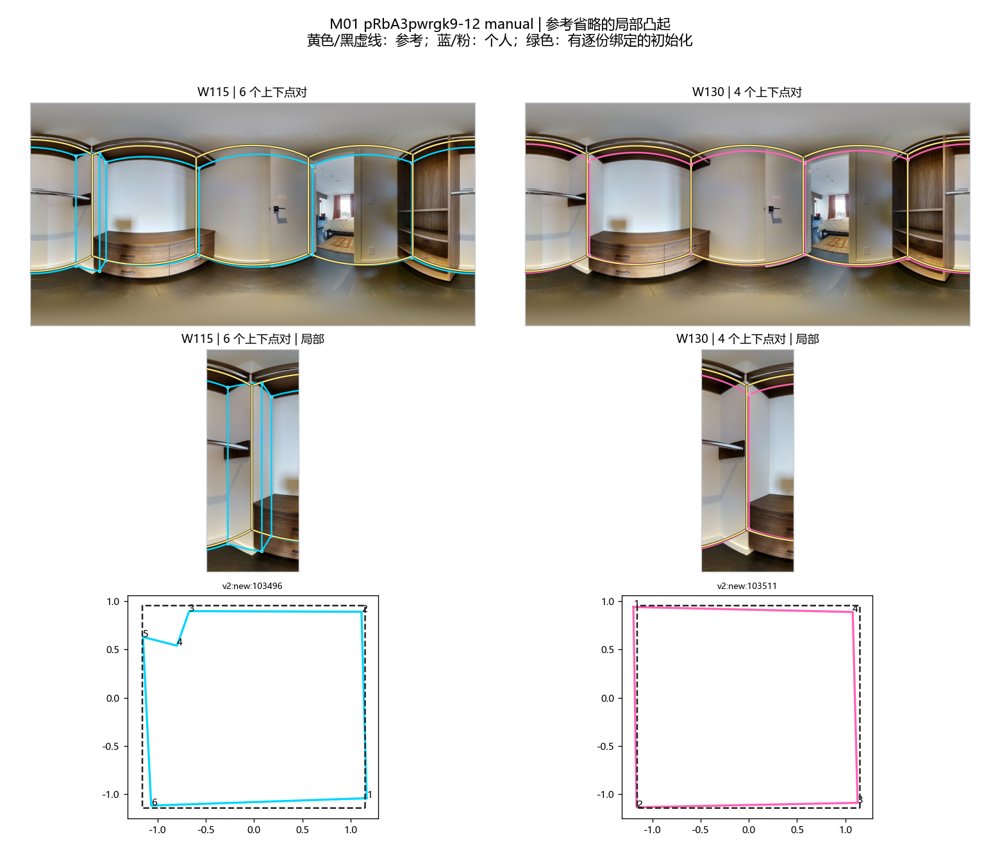
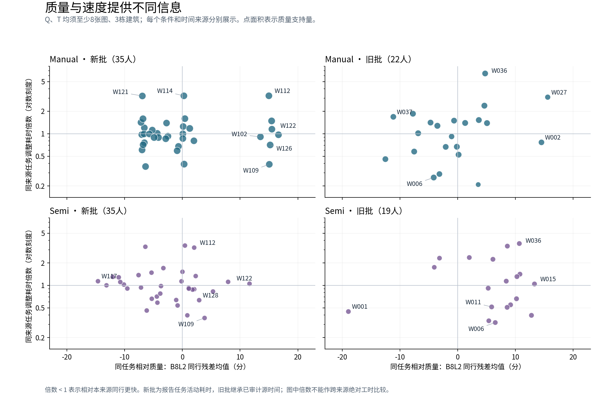
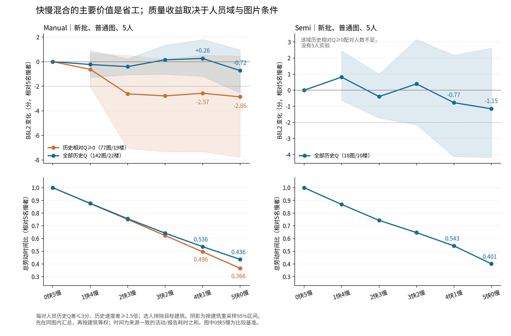
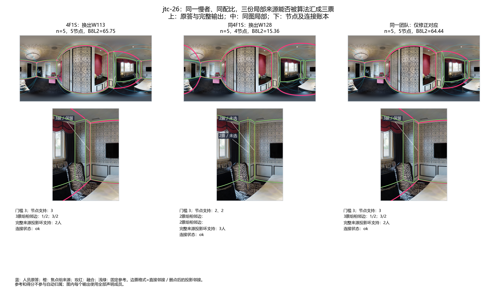
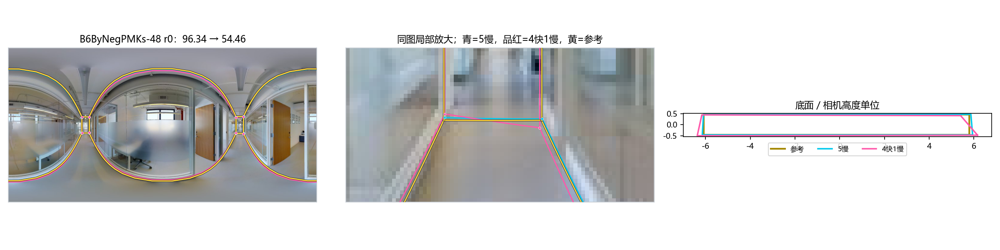
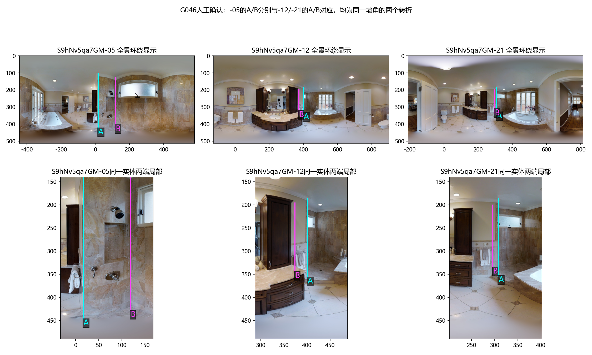

研究进度 · 人工查看路线 · 2026-10-21
① 从标法看人：保留细节与简化，确实可以区分
旧候选R5六人，在192张同图同参考的普通Manual图上，平均比其余人多0.329条短转折边，近共线冗余点略少。这支持“较细结构表达倾向”。但成员并不一致：下图M01的真实凸起，六人中只有W115、W122展开，其余四人也简化。

M01 · pRb-12 · GT未标该墙角；蓝色展示另一种标法类型。本图确因GT把木质装饰误作天花板而被用户排除，排除原因不是墙角漏标。现有正式质量暂停状态保留，此图用于看标法差异。
交互查看类别原答叠加 · M01—M09证据说明
同时看门洞范围与Semi的独立解释
门洞M05比较入口侧与卧室侧的目标选择；点数差不能直接叫漏标。Semi Z6-10中，一些重复角来自已确认但未纠正的初始化错误，不能当成多人独立发现真实细节。
门洞M05 · Semi初始化与提交对照
希望你看：这些差异是否足以形成有研究价值的“标法类型”？你更关心必要细节的保留、合理简化，还是范围/高度选择？不必重新逐份判对错。
② 画像能解释选人价值，但几个维度不能互相替代
| 共同任务比较 | 已经看到的差异 | 含义 |
|---|
| W109 / W112，99图 | 平均Q 84.32 / 84.99；W112每图都更慢。困难15图W112平均高8.10分，中等18图却低6.78分。 | 总体质量接近，效率与条件表现不同。 |
| W122 / W126，106图 | 平均Q 86.08 / 86.42；低尾P10 50.11 / 61.00；低于50分10 / 2图。 | 均分掩盖下尾差异；W126仍会省略W122保留的某些细节。 |
| W032 / W034 | 42张共同图平均Q 62.10 / 63.30；各自库存筛除6/99与14/114。 | 筛除是辅助交付证据，分母不同，不当作共同图错误率。 |
| Semi W006 / W011 | 终稿总体Q约83；各有6次已确认错误初始化机会，原样未改5 / 6次。 | 终稿质量与识别错误预标注是两种表现。 |

散点图用于观察画像；下方研究台可以逐人查看Q、低尾、时间、难度与审核机会。
进入本轮画像，先看W109、W112、W122、W126 · 四组具体画像
希望你看：这样的画像是否回答了“这个人怎样标、适合什么任务”？若缺一项关键行为，请直接指出；暂不要求把所有人硬分进几个格子。
③ 组合确实有收益：要说明和谁比较、代价是什么
普通Manual、7人团队中，1高Q+6低Q比7低Q平均提高1.87分，3高Q+4低Q提高4.45分（170图、22栋，建筑等权）。6高Q+1低Q比7高Q平均低1.04分。高低Q来自目标建筑之外的历史，是实验分层。
普通Manual的新批人员，历史Q配平后，4快1慢对5慢在142图平均ΔQ为+0.26，劳动时间比0.536；但质量下降超过5分的比例为22.76%。限定高Q域的77图，平均ΔQ为−2.57、劳动时间比0.496。固定为共同77图后，全Q域为−0.14，高Q域仍为−2.57。

平均节时和偶发质量下降需要一起看。劳动时间是已保存源活动时间合计的对照，不能直接当实际等待时间。
交互查看高低Q、快慢和固定核心增人
希望你看：你更想优先得到“质量接近、劳动量更低”的规则，还是“恢复困难局部、接受更多时间”的规则？二者都可研究，人工反馈用于确定展示重点，不据此删掉不利结果。
④ 两种重要机制：墙角有没有聚到一起，墙的位置有没有偏
jtc-26：相同配比、同一慢者，背景与对应仍会改变结果
原5快队换入W106后，局部2票变3票，团队Q 15.14→65.75；W106本图个人Q却比被换者低。下图再固定这个慢者与4快1慢配比：换另一名背景成员后，对应把三份局部观察拆散，Q仅15.36。同一队只改研究副本的对应可恢复到64.44。

它同时说明个人总Q不等于局部贡献，以及算法拆组不能全归咎于人员类型。右图候选未替换现用融合。
进入四例原答、投票、BEV和3D交互 · 融合机制报告与候选失败例
B6-48：相同4角、每角都是5票，也会显著变歪
两端底点不到2像素的偏差，令远端短墙方向误差4.71°→40.79°；底面IoU 97.85%→90.78%，Q 96.34→54.46。这既包含三维几何放大，也包含评分对方向的敏感性。

支持量与另外两种机制
共同77图中，高Q快速组合在无几何自遮挡且无短边53图为+0.96；有短边7图为−9.69；几何自遮挡17图为−4.88。短边组点数始终相同，说明不能把损失都解释为漏角。
Uw-22固定5人：3票变2票、必要转折失选 · 固定核心加人：门槛提高、节点丢失及恢复 · 同人数同角点数的个人低尾正反例
希望你看：jtc恢复的局部是否是你关心的真实贡献？B6这种“面积仍接近、短墙明显歪斜”的差异，你在三维任务中看重到什么程度？这里先讨论质量含义，不按单例修改评分。
⑤ 同房：质量与部分结构习惯可迁移，具体实体对应要看清
已完成9组、44图、7栋的多视角研究。个人Q预测中，多张本人同房作答直接平均的误差12.49分，楼外历史基线15.40分。43图已保存124,924个真实融合前缀；既有结果可直接接后续类别。
新局部包只看G046、G057共5图。G057同一门侧端点，在两个视角分别6/33和21/34人命中；部分人员两边都保留，部分人只在某个视角保留。本人/他人各半预测的Brier为0.2603，虽优于他人基线0.3175，却未胜过固定50%概率的0.25。因此局部表达差异可以保留，预测优势还没有成立。
人工确认：G046的-05淋浴近景中A/B，分别与-12/-21的A/B对应；两个都是同一墙角的转折。局部数表原先就按这一绑定试算，现更新其人工证据状态。

确认仅覆盖图中这两处局部转折，不扩展到全房其他角点或人员逐份正确性。
查看同房已保存叠加与人数过程 · 新局部研究与G057图
⑥ 看完后，给几句整体判断就够
请按你觉得重要的顺序回应：哪种人员差异最有解释价值；哪些例子与实际墙面理解不符；组队更希望追求节时还是困难结构收益。G046的A/B已记录为同角。没有意见的部分可以跳过。
下一阶段仍保留导师要求的同类换人、跨类与类别块替换。新类别应先解释实际标法，再接画像、组合效益与同房验证。现有材料不需要等新分类返回才看。
本页复用已交付正式图表，不生成新统计、不复制原图、不写回审核。反馈请在对话中提供，再按对象与版本登记。全部相对链接可在本仓库直接打开；完整研究台还依赖已生成的本地资源。